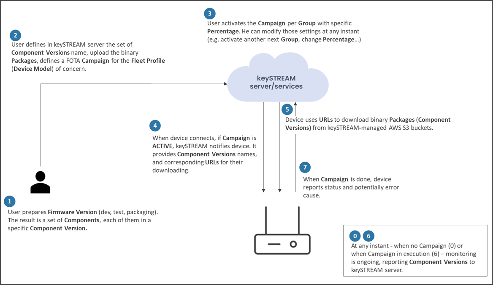

Note: FOTA integration and usage can be performed and evaluated only on the Trust Platform Design Suite (TPDS) application. Ensure you have the latest TPDS application installed, along with the keySTREAM Connect extension, to enable full FOTA functionality and testing.
Note: The FOTA Agent and FOTA Process modules are provided as part of the KTA package and do not require modification. Only the APIs listed below need to be implemented by you.

The KTA library handles all communication with keySTREAM. You only implement the platform-specific parts — how to read your firmware version, how to download, and how to store state.
That's it. Three touchpoints in fotaplatform.c, plus two storage functions in k_sal_fotastorage.c.
| # | Function | File | What It Does |
|---|---|---|---|
| 1 | fotaPlatformGetComponents() | fotaplatform.c | Return your firmware's current name and version |
| 2 | fotaStartInstalltation() | fotaplatform.c | Receive a download URL → download the binary → write to flash |
| 3 | fotaUpdateComponent() | — (you call it) | After download, tell KTA if it succeeded or failed |
| 4 | salFotaStorageWrite() | k_sal_fotastorage.c | Save FOTA campaign state to your NVM |
| 5 | salFotaStorageRead() | k_sal_fotastorage.c | Load FOTA campaign state from your NVM |
fotaUpdateComponent()is already implemented by KTA. You only call it — you don't write it.
KTA calls this at startup and when keySTREAM queries the device. Return the currently running firmware name and version.
Fill these fields in xpComponents[0]:
| Field | Max Size | Example |
|---|---|---|
componentName | 16 bytes | "MY-APP" |
componentNameLen | — | 6 |
componentVersion | 16 bytes | "2.1.0" (free-form string) |
componentVersionLen | — | 5 |
Return: E_K_FOTA_SUCCESS or E_K_FOTA_ERROR
How you get the version is entirely up to you — read it from a struct in flash, a header constant, a file, a register, whatever works on your platform.
Minimal example:
KTA calls this when a FOTA campaign is ready. You receive the download URL and must handle the rest.
Note: The function name has a double-
t(fotaStartInstalltation) — this is the actual symbol name in KTA.
What you get from xpComponents:
| Field | Max Size | Description |
|---|---|---|
componentTargetName / componentTargetNameLen | 16 bytes | Name of component to update |
componentTargetVersion / componentTargetVersionLen | 16 bytes | Target version |
componentUrl / componentUrlLen | 512 bytes | HTTPS URL to download the firmware binary |
What you must do:
xpComponents->componentUrlfotaUpdateComponent() when done (success or failure)Minimal example:
After your download + flash write finishes, you must call this to tell KTA the result.
KTA needs to save campaign state so it can resume after a reset. You provide two functions that read/write raw bytes by ID to whatever NVM your MCU has.
Edit: SOURCE/salapi/k_sal_fotastorage.c
Storage IDs KTA uses:
| ID | Value | Max Size | Purpose |
|---|---|---|---|
FOTA_STORAGE_NAME_ID | 0x2001 | 36 bytes | Campaign name |
FOTA_STORAGE_METADATA_ID | 0x2003 | 68 bytes | Campaign metadata |
FOTA_STORAGE_COMMIT_ID | 0x2005 | 12 bytes | Commit flag (written last for power safety) |
FOTA_STORAGE_COMPONENT_ID(i) | 0x2010 + i | ~558 bytes | Component record (name, version, URL, state) |
Rules:
false.If your MCU has no NVM (or for quick evaluation), use this stub:
With the stub, FOTA cannot resume after power loss — the download must complete in one session.
Your application must call the KTA agent periodically so it can communicate with keySTREAM and receive FOTA campaigns.
When a campaign arrives, KTA automatically:
fotaPlatformGetComponents() to check current versionsalFotaStorageWrite()fotaStartInstalltation() with the download URLYou must provide your own bootloader. Its job:
How you implement this depends entirely on your MCU architecture. The SG41 reference uses ECC608 for ECDSA signature verification and dual-bank swap — study firmware/sg41_boot/src/app.c for one approach.
fotaPlatformGetComponents()** — returns your firmware name + versionfotaStartInstalltation()** — downloads from URL, writes to flash, calls fotaUpdateComponent()salFotaStorageWrite/Read()** — stores/loads FOTA state in your NVM (or use stub)ktaKeyStreamInit() + periodic ktaKeyStreamFieldMgmt()KEYSTREAM_DEVICE_PUBLIC_PROFILE_UID to match your ECC608 fleet profile| Symptom | Fix |
|---|---|
| KTA reports wrong version | Check fotaPlatformGetComponents() — is it reading the real running version? |
| Download never starts | Check fotaStartInstalltation() — are you triggering your download logic? |
| Download fails | Check your TLS/network stack and CA certificate |
| Reboot shows old version | Check that you activate the new firmware after fotaUpdateComponent() |
| FOTA state lost after reset | Check salFotaStorageWrite() — is it actually writing to NVM? |
| Campaign not received | Is ktaKeyStreamFieldMgmt() being called every ~5 seconds? |
You implement:
| File | What to Do |
|---|---|
SOURCE/kta/modules/fotaservice/fotaplatform.c | Implement fotaPlatformGetComponents() + fotaStartInstalltation() |
SOURCE/salapi/k_sal_fotastorage.c | Implement salFotaStorageWrite() + salFotaStorageRead() |
KTA provides (do not modify):
| File | Purpose |
|---|---|
SOURCE/kta/modules/fotaservice/fotaprocess.c | FOTA state machine |
SOURCE/kta/modules/fotaservice/fotaagent.c | FOTA orchestrator |
SOURCE/kta/modules/fotaservice/include/fotaplatform.h | API declarations + types |
SOURCE/salapi/include/k_sal_fotastorage.h | Storage IDs + record structures |
SG41 reference (study, do not copy blindly):
| File | What It Shows |
|---|---|
SOURCE/salapi/k_sal_fotastorage_eeprom.c | NVM storage using SmartEEPROM |
firmware/sg41_kta_fota/src/app_dldr.c | Download + flash write via WiFi |
firmware/sg41_kta_fota/src/app_KTA.c | KTA agent loop pattern |
firmware/sg41_boot/src/app.c | Bootloader with ECC608 signature verification |